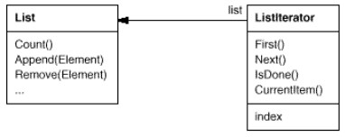
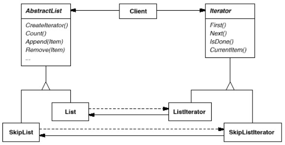
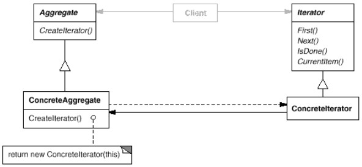

But : fournit un moyen d'accéder séquentiellement aux éléments d'un aggrégat sans exposer sa représentation interne.
Un aggrégat (par exemple une liste) doit fournir une manière de le parcourir sans devoir connaître sa représentation interne.
On peut aussi avoir besoin de parcourir l'aggrégat de différentes manières ; mais il est préférable de ne pas alourdir l'API de l'aggrégat avec des méthodes liées à chaque manière de le parcourir.
On peut aussi avoir besoin d'avoir plusieurs itérations en cours sur un même aggrégat.
Le pattern Iterator permet cela. L'idée principale de ce pattern est d'externaliser le parcours de l'aggrégat dans un objet, l'itérateur.
L'itérateur définit une interface pour accéder aux éléments de l'aggrégat, garde la trace de l'élément courant.
Exemple
On souhaite itérer une liste.Pour itérer sans surcharger l'API de
List, on crée un objet extérieur (un itérateur) qui va contenir les opérations d'itération.

Note : l'API java (java.util.Iterator) utilise hasNext() et next().
Pour l'utiliser (pseudo-code):
List list = new List();
ListIterator it1 = new ListIterator(list);
ListIterator it2 = new FilteringListIterator(list);
while(it1.hasNext()){
System.out.println(it1.next());
}
Cette solution permet déjà :
- d'externaliser les méthodes d'itération dans un itérateur
- d'effectuer plusieurs itérations simultanées
Voir un exemple dans DemoIteratorSimple.java.
On définit une classe
ArrayAggregate qui encapsule un tableau d'objets, et on définit deux itérateurs pour cette classe.
Le code de test montre qu'on peut itérer cet aggrégat de différentes manières, et itérer de plusieurs manières en même temps.
Mais il reste un problème :
L'itérateur et l'aggrégat sont couplés : le client doit savoir que l'itérateur parcourt tel type d'aggrégat.
Il serait préférable de pouvoir changer la classe de l'aggrégat sans changer le code client.
Pour y arriver, on généralise le concept d'itérateur pour supporter le concept d'itérateur polymorphe.
Pour cela, on introduit 2 interfaces,
AbstractList et AbstractIterator, ce qui rend le mécanisme d'itération indépendant de l'implémentation de l'aggrégat.

Si on veut toujours pouvoir écrire du code indépendant de l'implémentation de la liste utilisée, on donne à la liste la responsabilité de crééer ses itérateurs,
ce qui se fait par un méthode du type
createIterator(), une Factory method.
On se retouve dans une situation de factory method, avec deux hiérarchies, une pour les aggrégats et une pour les itérateurs ; les deux hiérarchies sont connectées par
createIterator().
Structure
Schéma GOF : Voir un exemple dans DemoIteratorComplet.java.
DemoIteratorSimple.java a été modifié et complété de manière à utiliser les itérateurs et aggrégats abstraits.
On voit dans le code de test que le client n'est plus obligé de préciser le type précis d'itérateur utilisé :
ArrayAggregate.NormalIterator it1 = aa.getNormalIterator();est remplacé par :
NormalIterator it1 = aa.getNormalIterator();
En java
L'API collection fournit une implémentation de Iterator :ListOn a bien la notion d'itérateur abstrait, comme le montre la signature de la méthodec = new ArrayList (); for(Iterator i = c.iterator(); i.hasNext();) { System.out.println(i.next()); }
iterator() :
public Iterator<E> iterator()
Exercice : ArrayList iterator
Remarques
Il existe de nombreuses variantes d'itérateurs.Itérateurs externes et internes
Ces deux types d'itérateurs apparaissent avec la question : qui contrôle l'itération : le client ou l'itérateur ?-
Si c'est le client, on parle d'itérateur externe. Dans ce cas, le code client doit piloter le parcours de la liste et demander explicitement à l'itérateur le prochain élément.
Plus souples pour le client (par ex si on veut comparer 2 collections).
Avant java 8, c'était (presque) le seul moyen de parcourir une collection.
Autres noms : itérateur actif ou explicite.for(Iterator<String> i = c.iterator(); i.hasNext();) { System.out.println(i.next()); } -
Lorsque c'est l'itérateur qui contrôle le parcours, on parle d'itérateur interne.
En java, possible depuis java 8 avec l'introduction des streams.
Autres noms : itérateur passif ou implicite ; callback iterator.c.stream().forEach(System.out::println);
Curseurs
Une autre question : qui définit l'algorithme de parcours de l'aggrégat ?En général, est géré par l'itérateur.
Cette solution permet de réutiliser l'algo de parcours sur d'autres types d'aggrégats.
Permet aussi de changer facilement l'algo.
Mais l'algo de parcours peut avoir besoin d'accéder à des variables privées de l'aggrégat, ce qui viole l'encapsulation de l'aggrégat.
L'algo de parcours peut être géré par l'aggrégat lui-même, dans ce cas l'itérateur ne sert qu'à stocker l'état de l'itération.
Ce type d'itérateur est nommé curseur.
Robustesse
Modifier un aggrégat durant le parcours peut générer des bugs (accéder 2 fois au même élément, pointer sur un élément déjà supprimé).Un itérateur est dit robuste s'il garantit que la modification de l'aggrégat durant le parcours est possible, sans dupliquer la liste.
Exercice :
Quelles sont les caractéristiques des itérateurs d'exemple (
- Interne, externe ?
- S'agit-il de curseurs ?
- Sont-ils robustes ?
Quelles sont les caractéristiques des itérateurs d'exemple (
DemoIteratorSimple et DemoIteratorComplet) ?
- Interne, externe ?
- S'agit-il de curseurs ?
- Sont-ils robustes ?